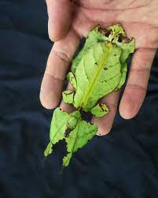
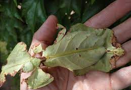
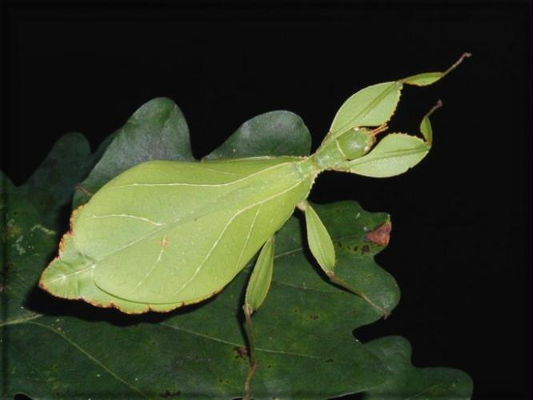
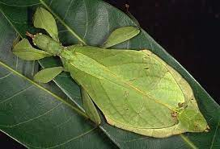
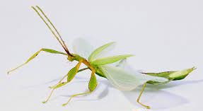
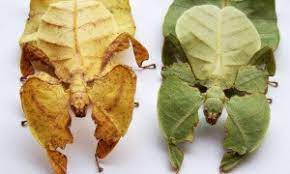
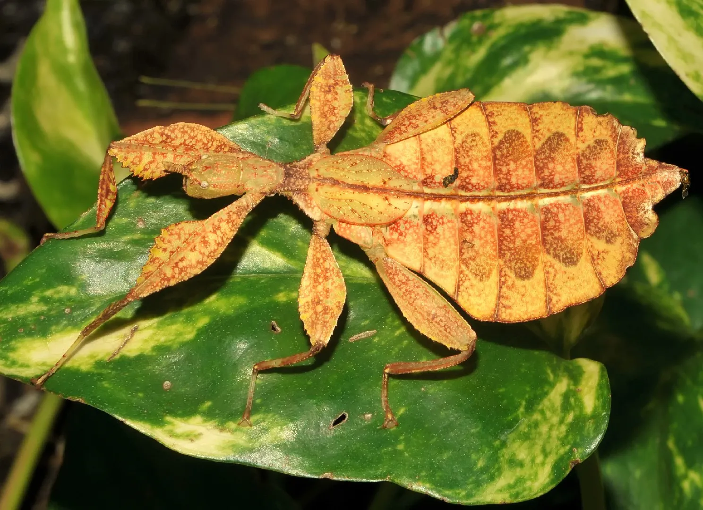
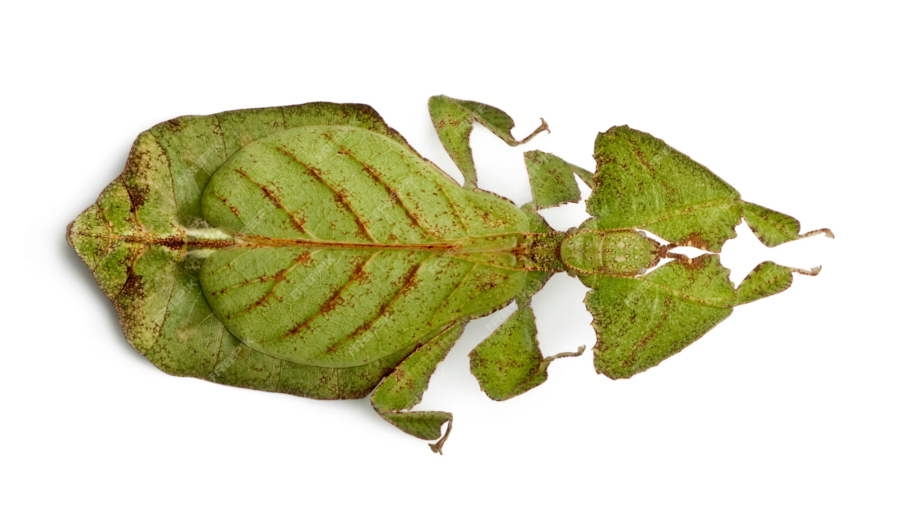
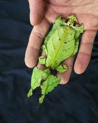
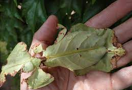

 

Bardzo ładny liścciec pochodzący z Malezji sklasyfikowany przez Linnaeusa w 1754.
Samica wyraźnie różni się od samca, wielkości od 8,5 do 9,5 cm, posiada szerokie skrzydła na
których występują przebarwienia. Składa około 200 jaj, ciekawostką jest to, że jajka składane
są tylko w nocy a efekt jak taki jak ktoś by strzelał z czegoś do terrarium. Jajka nabierają
dopiero wyglądu jajek ze zdjęcia kiedy wchłoną odpowiednia ilość wody. Samice żyją około 6-8
przy zapewnieniu im odpowiednich warunków. Samiec jest mniejszy do samicy 6,5-7 cm.
Potrafi latać, żyje krótko, 4-6 miesięcy.



Liściec dwuoki występuje w naturze na Jawie, w Malezji i na Sri Lance.
Polska nazwa liściec dwuoki pochodzi od dwóch okrągłych plam na odwłoku imitujących oczy.
Tą taktykę stosuje wiele innych gatunków liśćców. Samica (dorasta do 8,5 cm długości ciała):
ma szerokie, grzbietobrzusznie spłaszczone ciało, o dość regularnym kształcie imitującym liść.
Samice posiadają szerokie przednie odnóża i nieco mniejszą od pozostałych gatunków pierwszą parę
zgrubiałych i użyłkowanych skrzydeł. Druga para skrzydeł jest zredukowana do przezmianek. Samica
jest masywna, niezdolna do lotu, posiada krótkie do 0,5cm czułka. Samiec (dorasta do 6 cm długości ciała):
ma szerokie odnóża, jest smukły, a jego odwłok przypomina kształtem łyżeczkę. Samce mają dobrze rozwiniętą drugą
parę skrzydeł, potrafią aktywnie latać na niewielkim dystansie. Pierwsza para skrzydeł jest zredukowana i zgrubiała.



Występuje na Półwysepie Malajskim, a zwłaszcza Wyżynie Cameron oraz okolicznych wyspach.
Jest to jeden z większych gatunków, osiąga do 12 cm długości. Ciało jest silnie spłaszczone grzbieto-brzusznie;
owad jest cienki niczym kartka papieru, jedynie dorosła samica składająca jaja ma nieco pogrubiony odwłok.
Kształtem przypomina liść, a na pokrywach skrzydeł posiada żyłkowanie. Barwa najczęściej zielona, zdarzają się
jednak zarówno osobniki brązowawe, jak i żółte – wszystko zależy w jakim otoczeniu przebywa owad. Cały usiany jest
brązowymi kropkami. Brzegi jego ciała są nieco nierównomierne, co imituje lekko nadgryziony liść.

